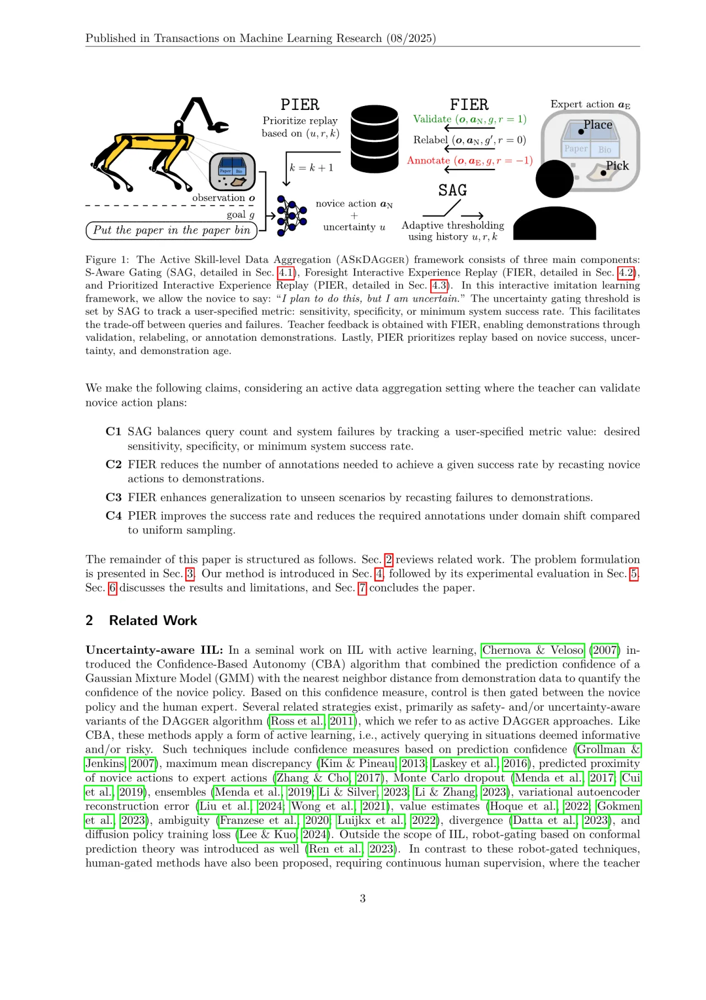
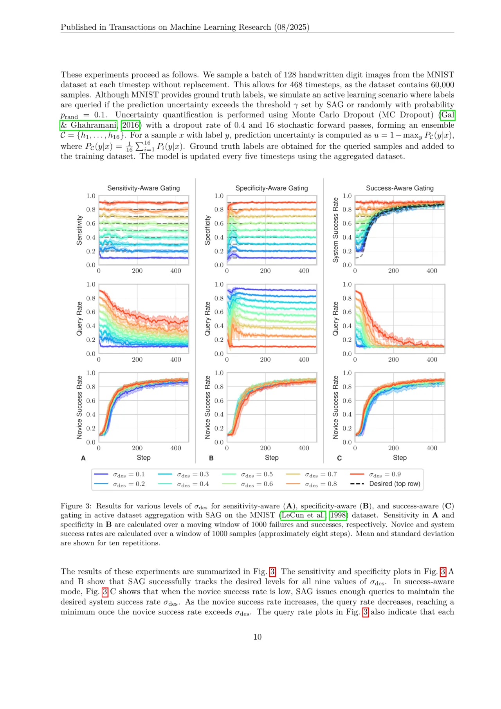
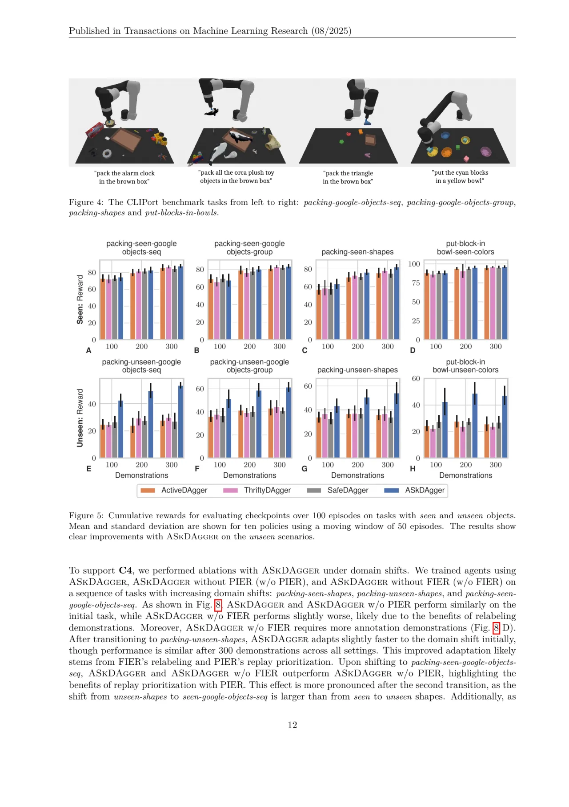
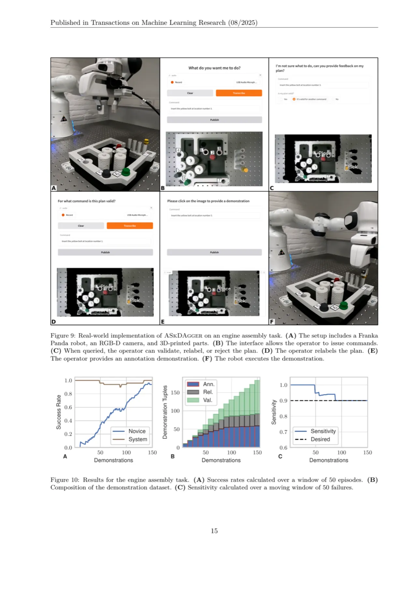

ASkDAgger 是一个交互式模仿学习框架，通过让机器人"菜鸟"（novice）在不确定时向人类教师提交其计划动作，从而充分利用该计划所蕴含的信息——自适应调节查询门控阈值、将菜鸟动作复用为示范、并按优先级回放经验——在显著减少人类标注量的同时提升策略性能与泛化能力。
交互式模仿学习（Interactive Imitation Learning, IIL）允许人类在机器人执行任务时提供示范与纠错，是解决协方差偏移（covariate shift）问题的有效手段。然而，人类的教学代价是 IIL 大规模落地的核心瓶颈。
"Human teaching effort is a significant bottleneck for the broader applicability of interactive imitation learning." —— ASkDAgger 摘要
现有主动 DAgger 方法（如 SafeDAgger、ThriftyDAgger）在向教师发出查询时，只是简单地移交控制权，完全抛弃了菜鸟的计划动作。这造成两个损失：
ASkDAgger 让菜鸟在不确定时说："I plan to do this, but I am uncertain."——教师随即对该计划进行验证（validate）、重标注（relabel）或拒绝（reject），并将反馈信息用于三个方面：自适应门控、示范数据集构建、优先回放。

ASkDAgger 在每个时间步让菜鸟以一定概率向教师提交计划动作，教师给出反馈后，框架通过三个组件分别利用该反馈：自适应调节查询门控（SAG）、将计划复用为示范（FIER）、按优先级回放（PIER）。

动态调节查询阈值 γ，以追踪用户指定的度量：sensitivity（真阳性率）、specificity（真阴性率）或最低系统成功率。通过对最近 Nmin 次查询的结果进行 logistic 回归，估计当前阈值下的期望指标值，并与目标 σdes 比较后更新阈值。
教师对菜鸟计划进行验证或重标注后，将其纳入示范数据集：
· 验证（validate）：菜鸟动作本身即为正确示范；
· 重标注（relabel）：菜鸟对某目标的失败动作可被标注为另一目标的成功示范（类似 HER）；
· 拒绝（reject）：菜鸟动作既不合法也无法重标注，需教师另行提供示范。
在回放示范时，依据三个因素赋予优先级：①菜鸟不确定性（uncertainty）越高优先级越高；②菜鸟在该情境下失败（novice failure）的示范优先于成功情境；③越近期收集的示范优先级越高（age）。优先级采样概率公式：P(i, t) ∝ pαi,t，其中 pi,t 综合了不确定性、成功率与年龄三项因素。
形式上，ASkDAgger 处理交互式模仿学习（IIL）问题：机器人菜鸟与人类教师交替交互，菜鸟学习从观测 o 到技能参数 a 的映射（即目标条件化的可供性 goal-conditioned affordance）。每个时间步 t，菜鸟输出动作 at 及对应的不确定性 ut。若不确定性超过自适应阈值 γ，则以概率 pquery 向教师发出查询，请教师评价菜鸟的计划动作。教师反馈 rt 指示该动作是否适用于当前目标 g（成功/失败），用于更新 SAG 阈值与 PIER 优先级。
SafeDAgger（Zhang & Cho, 2017）使用固定启发式阈值；ThriftyDAgger（Hoque et al., 2022）使用固定查询率；现有主动 DAgger 变体在查询时均放弃菜鸟动作。ASkDAgger 则首次系统性地利用了查询时菜鸟动作所携带的信息，在三个层面（门控、数据集构建、回放）同时获益。
论文在三类实验平台上验证了四条核心主张（C1–C4）：MNIST 数字分类（验证 SAG）、CLIPort 语言条件化桌面操作仿真（验证 C1–C3）、以及真实世界机器人装配与分拣任务（验证 C1–C4 的实际适用性）。
在 CLIPort（Shridhar et al., 2021）框架下，训练 10 个智能体，采集 300 条交互式示范，在 4 个任务上与以下基线对比：active DAgger（无 FIER 和 PIER）、SafeDAgger、ThriftyDAgger，以及 ASkDAgger w/o FIER、ASkDAgger w/o PIER 消融组。超参数：mode = sensitivity，σdes = 0.9，Nmin = 15，prand = 0.2；PIER：α = 1.5，b = 10，β = 1，λ = 0.5。
| 主张 | 实验证据 | 结论 |
|---|---|---|
| C1：SAG 追踪指定度量 | MNIST 9 种目标值 × 10 次重复 | 实测指标与 σdes 高度吻合 |
| C2：FIER 减少标注量 | CLIPort 4 任务，ASkDAgger vs. active DAgger | ASkDAgger 标注示范量显著更低 |
| C3：FIER 提升泛化 | CLIPort unseen 任务集（颜色/形状/物体未见） | relabeling 带来对 unseen 目标的更优表现 |
| C4：PIER 加速域迁移 | 三阶段域迁移（seen-shapes → unseen-shapes → seen-google-objects） | ASkDAgger 成功率更高，标注更少 |
结果摘要（来自论文 Fig. 5–6）：在所有任务上，ASkDAgger 的累积奖励表现等于或优于所有基线，同时所需教师标注示范（annotation tuples）数量显著更少——因为 ASkDAgger 将大量菜鸟验证动作（validation）和重标注动作（relabeling）直接用作示范，不需要额外的教师标注。

在三阶段域迁移设置下（每阶段 150 条示范），ASkDAgger（含 PIER）相比 ASkDAgger w/o PIER：在 packing-seen-shapes、packing-unseen-shapes、packing-seen-google-objects-seq 三个连续任务上均实现更高的系统成功率，并在后期阶段收集更少的 annotation tuples（更多来自验证示范）。SAG 在整个训练过程中维持了设定的 sensitivity 水平。
在 Franka Panda 机器人上进行引擎装配任务（4 种颜色螺栓 × 7 个安装位置，150 条示范）：系统成功率维持在较高水平，同时随训练进行，验证示范（validation）比例逐渐增大，标注示范（annotation）比例降低——表明菜鸟策略在实际场景中逐渐无需人工干预即可独立完成任务。此外，在 Boston Dynamics Spot 机器人上的分拣任务也展示了 ASkDAgger 与内置原始技能（primitive skills）集成的能力。

消融实验（Fig. 8）表明：去除 FIER（ASkDAgger w/o FIER）后，unseen 任务集上的性能明显下降，因为失去了通过 relabeling 获取 unseen 场景示范的途径；去除 PIER（ASkDAgger w/o PIER）后，域迁移阶段的自适应速度变慢，所需标注量更多。两个组件缺一不可。
"ASkDAgger is designed for tasks with sparse rewards and learning mid- to high-level control. While this covers many problems, it does not extend to applications requiring high-rate feedback from the teacher." 因此，ASkDAgger 最适合机器人已有预定义原始技能（primitive skills），需要学习技能选择与参数化的场景，而对于需要连续高频反馈的低层控制任务，其适用性受限。
"FIER significantly improves performance, it relies on recasting failures as successes, which can be challenging in some applications." 若任务结构不允许同一动作对应多个目标（如动作空间缺乏重叠），FIER 的优势会大打折扣。
"ASkDAgger assumes the teacher can validate or relabel actions before execution. This may not always be feasible." 在实时性要求极高或教师不方便在线干预的场景下，执行前反馈可能无法实现。作者指出，在此情况下，验证和重标注可在执行后进行（post-execution），但会影响交互流程。
"Tuning hyperparameters in real-world settings is challenging. However, our experiments show that a single set of hyperparameters, without extensive tuning, generalizes effectively across different tasks, suggesting that hyperparameter sensitivity is not strongly dependent on task descriptions." 作者指出问题的存在，但也提供了缓解证据。
"Our evaluations primarily used policies with a CLIPort architecture, but ASkDAgger is not limited to this choice. It can be applied to any policy architecture where a teacher can determine the success of actions and provide demonstrations." ASkDAgger 原则上架构无关，但在其他策略架构（如扩散策略、Transformer 等）上的实证验证尚不充分。